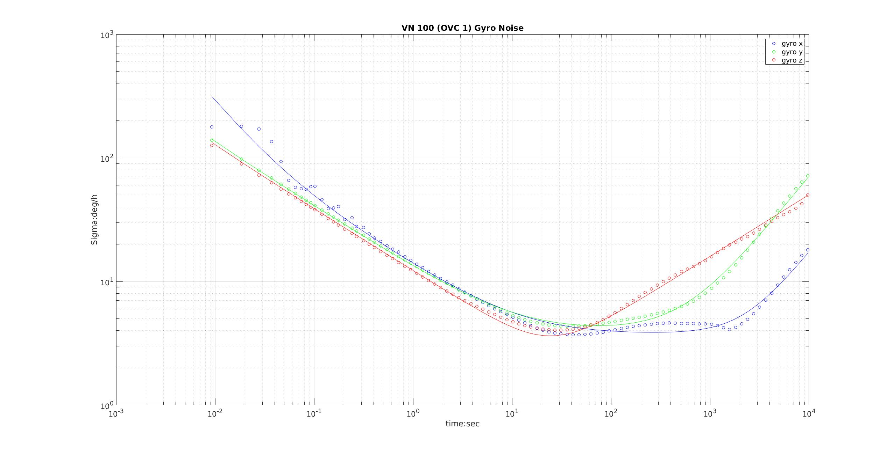

IMU Sensors
Falcam (InertialSense uIns 2.2)
This is the sensor that was used on the Falcam:
Find the manufacturer’s data sheet here.
An IMU noise recording was done on 2019-09-05, the bag is available for download.
The imu_utils repo on github was used
for an Allan variance measurement, and produced the following graphs.
Gyro:
Acceleration:
\
Here are the parameters:
From the imu_utils web page:
gyr_nis the gyro white noise in rad/s /sqrt(Hz)gyr_wis the random walk noise in rad/s * sqrt(Hz)acc_nis the acceleration white noise in m/s^2 / sqrt(Hz)acc_wis the acceleration random walk noise in m/s^2 * sqrt(Hz)
Here is the yaml file:
Gyr:
unit: " rad/s"
avg-axis:
gyr_n: 2.2296654083491523e-03
gyr_w: 2.9979585743663854e-05
x-axis:
gyr_n: 2.5371633002344977e-03
gyr_w: 2.6556855133795393e-05
y-axis:
gyr_n: 2.2510979099385144e-03
gyr_w: 3.7650281965731634e-05
z-axis:
gyr_n: 1.9007350148744450e-03
gyr_w: 2.5731620131464535e-05
Acc:
unit: " m/s^2"
avg-axis:
acc_n: 2.8754923891845741e-02
acc_w: 9.1324720576818348e-04
x-axis:
acc_n: 2.5595942122352455e-02
acc_w: 1.1283935968961301e-03
y-axis:
acc_n: 2.3976901776021291e-02
acc_w: 6.0692114712261006e-04
z-axis:
acc_n: 3.6691927777163492e-02
acc_w: 1.0044268732858101e-03
The manufacturer’s data sheet gives these numbers (converted into rads and /sqrt(Hz)):
- gyro white noise:
0.01 deg/s /sqrt(Hz) = 1.7e-04 rad/s /sqrt(Hz) (much less than measured above: 2.22e-03 rad/s /sqrt(Hz)) - gyro random walk:
0.15 deg/sqrt(h) = 4.36e-05 rad/s /sqrt(Hz) (comparable to measured above: 2.99e-5 rad/s /sqrt(Hz)) - acceleration white noise:
300 ug/sqrt(Hz) = 2.94e-3 m/s^2 /sqrt(Hz) (much less than measured above: 2.88e-02 m/s^2 /sqrt(Hz)) - acceleration random walk:
0.07 m/s^2 / sqrt(h) = 1.17e-03 m/s^2 /sqrt(Hz) (comporable to 9.13e-04 measured above)
There was no fan running or any known source of vibration present while the imu recording occured.
OVC 1 (VectorNav VN-100)
The IMU is a temperature compensated version somewhere in the $800 range.
An IMU noise recording was done on 2019-09-18, the bag is available for download.
The imu_utils repo on github was used
for an Allan variance measurement, and produced the following graphs.
Gyro:

Acceleration:
Here are the parameters:
From the imu_utils web page:
gyr_nis the gyro white noise in rad/s /sqrt(Hz)gyr_wis the random walk noise in rad/s * sqrt(Hz)acc_nis the acceleration white noise in m/s^2 / sqrt(Hz)acc_wis the acceleration random walk noise in m/s^2 * sqrt(Hz)
Here is the yaml file:
%YAML:1.0
---
type: IMU
name: OVC
Gyr:
unit: " rad/s"
avg-axis:
gyr_n: 6.6874234384522232e-04
gyr_w: 1.9222795985920433e-05
x-axis:
gyr_n: 7.0961553147908430e-04
gyr_w: 1.8787523798350273e-05
y-axis:
gyr_n: 6.7856317878720648e-04
gyr_w: 2.1287401237419982e-05
z-axis:
gyr_n: 6.1804832126937639e-04
gyr_w: 1.7593462921991043e-05
Acc:
unit: " m/s^2"
avg-axis:
acc_n: 1.5625391734576680e-02
acc_w: 2.3347315743898570e-04
x-axis:
acc_n: 1.2655463342569841e-02
acc_w: 1.6065754611454993e-04
y-axis:
acc_n: 1.5241413464686443e-02
acc_w: 1.7383597688629056e-04
z-axis:
acc_n: 1.8979298396473755e-02
acc_w: 3.6592594931611662e-04
From the manufacturer’s data sheet:
- gyro white noise:
0.0035 deg/s /sqrt(Hz) = 6.1e-5 rad/s /sqrt(Hz), which is a factor of 10 lower than what’s measured above: 6.687e-04 rad/s /sqrt(Hz) - gyro random walk:
only in-run bias stability of 10deg/h is provided. - acceleration white noise:
0.14 mg/sqrt(Hz) = 1.37e-3 m/s^2 /sqrt(Hz), which is a factor of 10 lower than what’s measured above: 1.56e-02 m/s^2 / sqrt(Hz) - acceleration random walk:
only in-run bias stability of 0.04 mg is provided (shouldn’t that be 0.04 mg/h)?